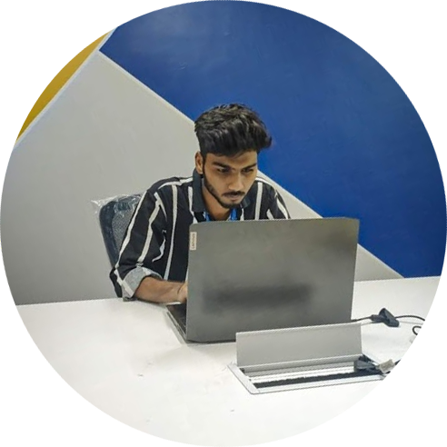

Mohammed Suhail Roushan Ali
CS.CODE.IN
Statement Of PurposeI am Suhail Roushan a 19th -year old Student with an Undergraduate in Computer Science from Lords Institute of Engineering and Technology, Hyderabad, I am my interest is in Photoshop, Video Editing is also in line with the of Android Development, I have an attitude of never give up. If started working on a project. I would like to complete it before time. Having a friendly nature with whomever I Met. Love to code at an Early Morning & Late Night Right now, I am in 2nd Year CSE and in the same direction I am working on a Start-up It’s an Android Application soon it will be going to launch from EdVenture Park. My Motivation took me to enrol in this program was that to learn about new things about the Market in Computer Engineering and change the World by Coding. When I was coding in Java, I got many errors like all developers, Even I too try for Stack overflow for finding my error in my code. I would like to Create new Web Apps and Android Applications which would help people by using them. I would like to solve problems using Today’s technology and making it more helpful. The Computer Science Diploma Program is a thing which I look forward to from my early age. During my early studies, I had no clue about Programming. But I knew I wanted to do something creative. My passion for Coding was identified by my parents who bought me a Computer when I was in 8th class. I chose to pursue Computer Science Engineering and joined College. I soon realized that learning programming languages give me immense eternal joy and satisfaction to make games and static websites. Today the world change changed from Cash to Online Payments. I would love to change the world by coding …. Joining the Program is something like gathering of my 4 years in 12 months. Why would someone waste 4 years and not yet confirmed of getting an affordable job? When I saw the curriculum and the way everything is going to be covered. When It comes to Meraj Faheem There is nothing about thinking so curious to join this program. Even though it has the topics which I would never learn about 4 years in my college. Where the curriculum is starting from the basics. I would be more confident and perfect from the scratch in coding. My expectations from the program are the atmosphere at this program gives you the chance to dirt your hand with codes, these kinds of practices provide you with the chance to learn from all of them, and not just about the technical stuff. Of course, there is always a possibility that I will create a collaboration with some of them in the future, and apart from others, I expect to be an Excellent computer student and a Full Stack Web Developer where most of the students wherein pursuing their degree in 4th year, I want to be the one who completed all thing and have better jobs than placements jobs. Well adding the diversity to the coding classrooms where it comes to obtaining different assets in order to boost the probability of you being gaining the knowledge, the most important thing is to have credible sources to back you up – and joining this program is able to fulfil that purpose and provide you with many different benefits as well. Sometimes it pays to stay in bed on Monday, rather than spending the rest of the week debugging Monday’s code |